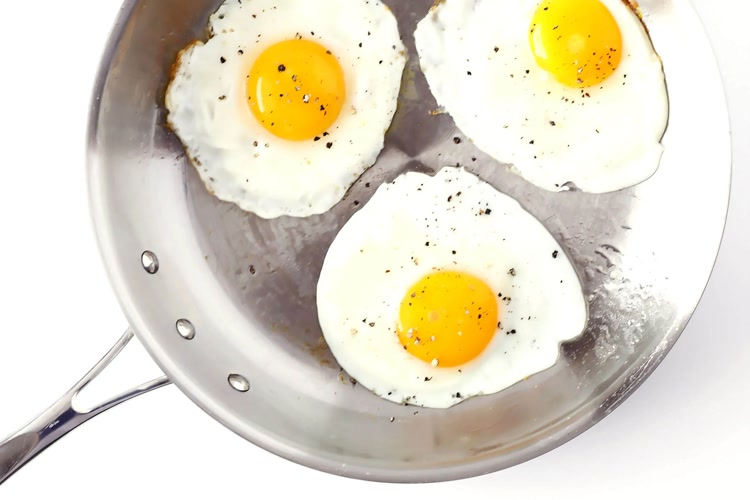

Fried Eggs

Description:
Fried eggs are usually thought of as diner breakfast fare, but they’re a easy way to add protein to all kinds of meals — salads, sandwiches or burgers
Ingredients:
- 1-3 raw eggs
- 2 teaspoons butter or oil
Steps:
- Carefully break an egg into a small bowl. (Repeat later if cooking multiple eggs.)
- Heat oil in a large (and preferably non-stick) sauté pan over medium heat. Once the pan
is fully heated, carefully pour in the egg, and let it cook until the whites are
completely set but the yolks are still soft. Remove immediately and serve for sunny-side-up eggs.
- Or, flip the egg over and cook for an additional 10-30 seconds for over-easy eggs, or 30-60 seconds
for over-medium eggs, or 1-2 minutes for over-hard eggs.
- Remove and serve immediately, seasoned with salt and pepper if you'd like.
Typical nutritional values per large egg fried in a small amount of oil::
- Calories: 110kcal
- Protein: 8.7g
- Total Fat: 8.9g
- Saturated Fat: 1.9g
- Cholesterol: 0.2g